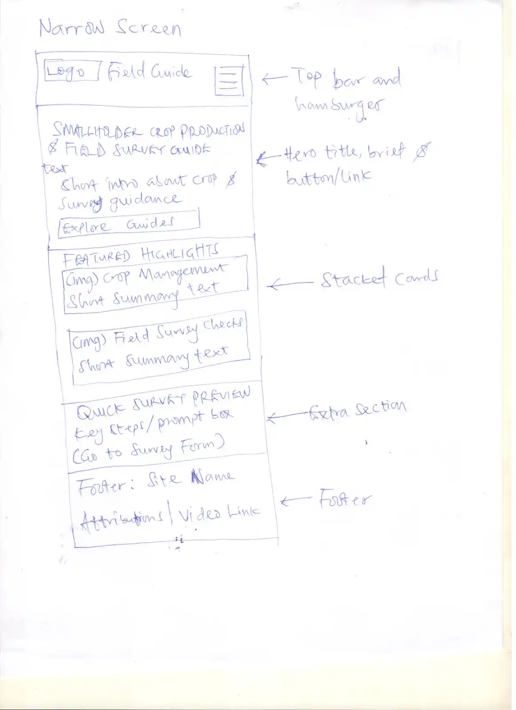
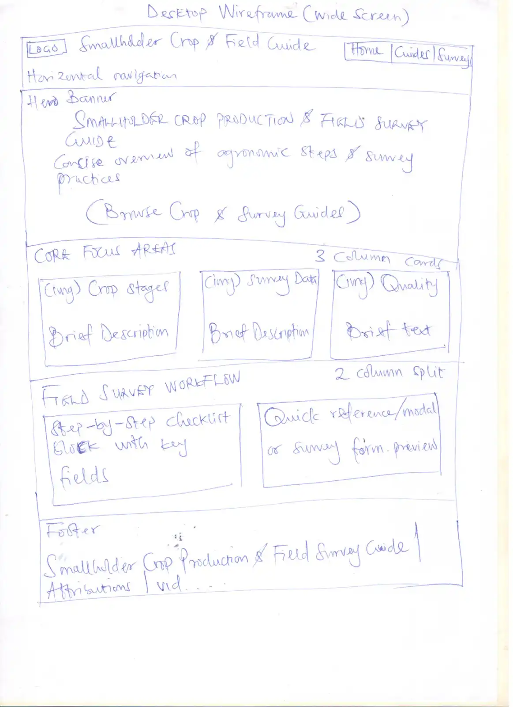

Smallholder Crop Production & Field Survey Guide — Site Plan
1. Site Name
Site Name: Smallholder Crop Production & Field Survey Guide
Why Selected: The title clearly identifies the two core topics of the site—practical smallholder crop management and structured field survey data collection—so farmers, enumerators, and planners immediately understand its purpose.
Optional Domain: smallholder-fieldguide.org
2. Site Purpose
The site provides a structured reference for smallholder crop production practices and field survey data collection. Visitors can browse crop and survey entries, filter guides by topic, inspect detailed requirements in a modal dialog, and use a field survey request form and checklist to support consistent on-farm and enumerator reporting.
3. Audience Scenarios
- How should I record plot area, input quantities, and harvest totals in a field survey so measurements stay consistent across records?
- What key agronomic steps and data-quality checks matter most from land preparation through harvest?
- Where can I view detailed guidance on a specific crop or survey topic without leaving the page?
4. Color Schema
This site plan uses the exact color palette planned for the final website:
- Primary (#1f4e3d): Header banner, footer banner, main headings, section borders, and primary accents.
- Accent (#9c4a1a): Subheadings, highlight markers, and secondary emphasis borders.
- Background (#f7f8f5): Page background behind content cards.
- Surface (#ffffff) & Text (#1e2923): Card backgrounds and body text.
5. Typography
- Merriweather: Used for
h1,h2,h3, and the site header title to give headings clear hierarchy. - Source Sans 3: Used for body paragraphs, lists, labels, and footer text for clean readability across mobile and desktop screens.
6. Home Page Wireframes

